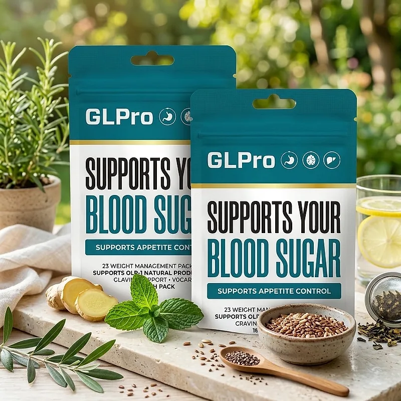
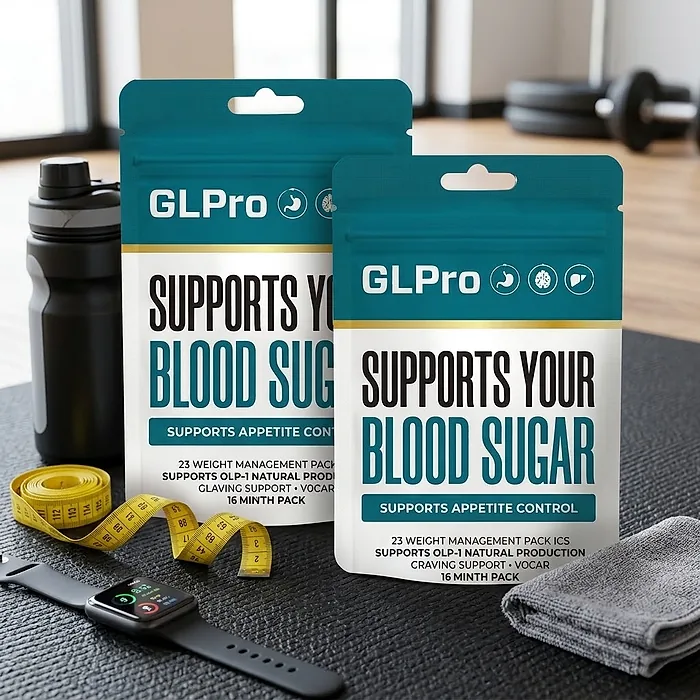

What Is GLPro Patch And How Does It Work?
GLPro Patch is a weight management patch designed to support healthy blood sugar levels, appetite control, and fewer cravings for adults who want to address the energy dips, snacking, and stubborn weight that can build up with age, stress, and modern eating habits through a natural, convenient approach — without pills to swallow or temporary quick fixes.
According to the pack, GLPro Patch supports your blood sugar, supports appetite control, and supports GLP-1 natural production, the hormone the body releases after meals to signal fullness, with craving support in a vegan format.
The official website presents it as part of the GLPro line, a unique solution for healthy glucose and natural weight loss, proudly crafted in the United States with premium ingredients sourced from around the world, particularly for adults who prefer a simple daily patch over capsules or complicated plans.
Rather than acting as a short-lived artificial fix, GLPro Patch focuses on supporting the body's own appetite signals, working gradually alongside daily routines to help maintain steady energy, fewer cravings, and long-term wellness.
With consistent daily use, a product of this kind is intended to support more stable energy, better control over snacking, and healthier weight management, especially when combined with a balanced diet, regular physical activity, good sleep, and routine check-ups.
From a practical standpoint, GLPro Patch is a daily patch — there is nothing to swallow, mix, or measure, and a one-month pack fits easily in a drawer or a bag.
It is a wellness product, not a medication, and it does not replace any treatment prescribed by a doctor or GLP-1 medication. The official website does not publish the list of ingredients or the directions for use, so anyone who wants to check the formula should look at the pack or ask customer support before ordering.
GLPro Patch Side Effects
GLPro Patch is presented by the official website as a natural, vegan product, designed for adults who are looking for a simple approach to blood sugar and appetite support, especially those who prefer an easy daily patch over pills or restrictive diets.
According to the official website, the formula is crafted in the United States, and the trust badges shown with the product describe it as non-GMO, made in an FDA-registered facility that follows Good Manufacturing Practices, reinforcing consistency, safety, and reliability.
There are no widespread reports of serious side effects. Because the official website does not list the ingredients, it is not possible to point to specific interactions; with any patch, mild skin redness or itching where it is applied is possible, so it is wise to change the spot each day and remove it if the skin gets irritated. Anyone who takes medication for blood sugar should be especially careful, since a product designed to support glucose levels may add to its effect. It is not intended to diagnose, treat, cure, or prevent any disease, and individual results may vary.
Pregnant or nursing women, people under 18, and anyone with a medical condition, sensitive skin, or taking prescription medication should consult a physician before using GLPro Patch, ensuring it fits safely within their personal wellness plan.
GLPro Patch Dosage
Each GLPro Patch pack contains 30 weight management patches and is labeled as a 1-month pack, which points to one patch a day. The official website does not publish the directions for use, so the instructions printed on the pack are the reference to follow.
As a daily patch, it requires no pills to swallow, no powders to mix, and nothing to measure. Patches of this kind are usually applied to clean, dry skin with little hair, such as the upper arm or shoulder, at the same time each day, which makes the routine easy to remember.
For best results, consistency is key. The official packages cover 60, 90, or 180 days, and because appetite and blood sugar support builds gradually, many people make it part of an ongoing wellness routine rather than a short trial.
There is no need for complex schedules or multi-step routines. One simple daily habit is designed to build support gradually alongside a balanced diet with fewer refined sugars, regular physical activity, and good sleep. One detail for careful readers: one official banner mentions 10 patches per pack, while the pack itself says 30, so it is worth confirming the count on the package you receive.
As with any wellness product, it's important to follow the instructions on the pack. GLPro Patch works best when used regularly, combined with proper hydration, balanced nutrition, and healthy daily habits.
GLPro Patch – Refund Policy
You can order GLPro Patch with confidence, knowing that every purchase is protected by a 60-day, 100% money-back guarantee. This allows you to try the product and decide if it delivers the support you expect.
According to the returns and refunds page on the official website, you have 60 days from the date of purchase to request a return authorization. Once it is approved, the product must be sent back within 14 days, opened or unopened, in good physical condition, and the customer pays the return shipping. The return address is 19655 E 35th Drive, Suite 100, Aurora, CO 80011.
How the refund process works: Contact customer support to request the return authorization, ship the product, and email the tracking number so the return can be followed. Once the package is received and inspected, you receive an email, and the refund is credited to your original payment method within a few days.
Customer Support Contact Information: glpatche@bestcsupport.com or the toll-free line +1 (720) 615-3649, available 24/7, as listed on the contact page of the official website. Order questions can also be sent to BuyGoods, the retailer.
Refund Processing Time: The order page promises the refund within 48 hours, while the returns page says the credit appears within a few days after the return is inspected, depending on your bank.
This refund policy is designed to give customers a clear path when trying GLPro Patch, with a published return address and support available around the clock.
GLPro Patch – Where To Buy
GLPro Patch is sold through its official website, so if you decide to try it, it's important to be careful about where you purchase it. The official website is the only sales channel the manufacturer lists, and it does not point to marketplaces such as Amazon, eBay, or Walmart.
Listings on third-party platforms may look similar but cannot be verified as authentic, raising concerns about safety, quality, and ingredient freshness. Products purchased outside the official source may not be covered by the money-back guarantee.
For this reason, it makes sense to purchase GLPro Patch only through the official website. Buying directly from the official source ensures you receive the authentic original product, with access to customer support and the full guarantee. Orders placed there go through a secure checkout, and the return and contact pages are linked at the bottom of the official page.
To avoid counterfeit batches and ensure maximum quality, always verify that you are ordering from the official GLPro Patch website before completing your purchase.
To ensure you’re getting the authentic product, most users choose to visit the official website.
Is GLPro Patch A Scam?
Based on what the official website discloses, GLPro Patch appears to be a real product: a weight management patch from the GLPro line, sold through an established retailer (BuyGoods), with a published refund policy, a return address, and customer support by phone and email. It is designed to support healthy blood sugar and appetite control as part of a consistent routine.
The main point of attention is transparency about the formula. The pack lists the benefits, but the official website does not name the ingredients and does not publish the directions for use. Before ordering, it is worth asking customer support for the full ingredient list and how to apply the patch.
On the other hand, the support details are clear: a toll-free phone line open 24/7, a support email, and a physical return address in Aurora, Colorado, with a focus on customer service and simple returns. Careful readers should also know that the returns page uses a generic template that mentions books and gift cards and says sale items cannot be refunded, which does not match the 100% guarantee on the order page.
The official website publishes no written customer testimonials, so this review does not quote any. Results vary from person to person, and no patch replaces a doctor's guidance, prescribed treatment for blood sugar, or GLP-1 medication.
GLPro Patch is backed by a 60-day, 100% money-back guarantee, and the return steps, including the address and the shipping rules, are published on the official website, which gives customers a clear path if the product does not meet their expectations.
If you're looking for a simple daily patch to support blood sugar, appetite, and fewer cravings without complicated routines, GLPro Patch is worth considering — especially when purchased directly from the official website.
For those who want to verify product details or check current availability, the official GLPro Patch website remains the safest option.

Check Availability On Official Website